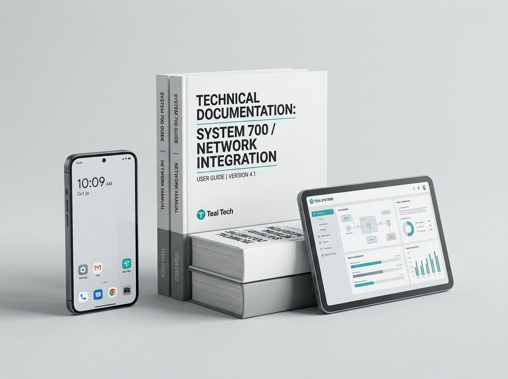

Most maintenance software records the past. Ours helps you fix the present.
Every CMMS can store a work order. PlantMaster Pro is the only one that has read your equipment manuals and can tell a technician what to check next.
Upload your manuals once. Ask questions forever.
Drop in the PDF manuals for your compressors, chillers, moulding machines — whatever you run. The AI indexes every page. After that, any technician can describe a fault in plain language and get an answer taken from your own documentation, not a generic internet guess.
- ✓Answers cite the exact manual and page they came from
- ✓Ask in English or Urdu — speak it if typing is slow
- ✓Captures your senior engineer's knowledge before he retires
- ✓Works at 3am on a night shift with nobody to call
Hear a bearing failing weeks before it seizes
Hold a phone to a running machine and record 30 seconds. PlantMaster analyses the sound and vibration signature, compares it against that machine's healthy baseline, and raises an alarm when the pattern shifts.
- ✓No sensors to buy — an ordinary phone microphone is enough
- ✓Baseline recorded once, every check compared against it
- ✓Alarms raised automatically when the signature drifts
- ✓Turn an unplanned stoppage into a planned Sunday job

The morning report, in your inbox at 7am
Management should not have to open an app to know how the plant is running. Every morning PlantMaster emails a plain summary of what happened yesterday and what needs attention today.
- ✓Jobs completed, jobs still open, total downtime
- ✓PM tasks falling due this week
- ✓Spares below minimum and POs awaiting approval
- ✓Sent to as many addresses as you like — owner, GM, accounts
Your fitter speaks. The system writes the report.
The biggest reason maintenance records stay empty is that nobody wants to type on a phone with oily hands. So don't. Press the microphone, describe the job in Urdu or English, and PlantMaster writes it up as a proper technical record.
- ✓Speak Urdu — it is transcribed and translated to technical English
- ✓Works for work orders, findings, root cause and handovers
- ✓Staff who avoid writing will actually use the system
- ✓Records get filled in properly instead of left blank
